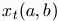
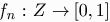
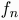
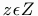
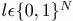

| Introduction. |
|
There are many questions one could ask about how the media develops a scandal or series of scandals. How quickly will new information reach the public? How accurate will it be? How efficiently will investigators coordinate their efforts? In this model we decided to focus on how reporters might learn to satisfy demand for the scandal. Consider a reporter who has discovered the following two stories related to a particular scandal.
(i) Politician x slept with celebrity y. Which story is better to publish? To which media outlets should she send it? A inexperienced reporter may have only vague ideas about how a particular story will be received among the various publishers she knows of. However the more stories she sends out, the more feedback she gets, perhaps in the forms of critical reviews, a share of the profits, of simply a price offered. It is easy to imagine that the reporter could eventually learn how to select news stories and decide where to send them for publication. |
| Model |
|
In this model we assume that reporters and media outlets are synonymous. That is each reporter has access to a particular audience where she may publish her own stories or the stories of other reporters. Let N be the cardinality of the set of these reporter / media outlet nodes. Each node in this system is doubly linked to everyother node and associated with each link at each time step is a value. Let  be value of the connection from a to b at time t. We interpret this value as the price b would pay for one of a's stories, or more generically, the "confidence" b has in a to send out a good story. This value will depend on the past success b has had publishing a's work in terms of increased advertising revenue, for example. Let the "confidence network", Xt, be the N x N matrix of these values at time t. Notice there is no reason to expect this matrix to be symmetric; a's offer to b need not be same as b's for a.
In addition to the network, there is a set Z of possible news stories. In their capacity as media outlet, each node n has associated with it a function  which reveals to that outlet the "true" value of a story sent to it. Reporters sending stories to node n initially know nothing about  but will have the opportunity to learn about it. They learn through the feedback sent back over the connection. Sending a story through the network is not free. We assume that a reporter pays fixed cost c for each other reporter to which they send a story. Roughly speaking, in the long run, it will not be worth sending stories to nodes whose offer price is above this cost. We assume that a reporter can only send out one story in each time step. Thus each reporter's problem in every time step is to select a story and list of recipients. However, since the value to the reporter of a particular selection depends on how the reporter distributes it, the value of the first decision depends on the second. Before play begins, each reporter,n is endowed with an initial stock of guesses Gn,0. Elements of Gn consist of a story, , and a recipient list,  |
| Timing |
|
Reporters in our model learn optimal story selection and distribution decision by refining their intial stock of guesses based on feedback from the network. Computationally we model the refinement process with a genetic algorithm.
Before play begins, the connections in the confidence network are set to some initial values, X0. In each time step t,
|
| Results |
|
For the results shown below, we have assumed that every reporter has the same evaluation function, . (News stories have objective value.) Given this assumption, we are testing how well the genetic algorithm does at learning this objective value. We ran 25 simulations with 5000 periods each. (This means 100 generations of guess sets for each reporter, since the GA runs every 50 periods.) The 25 runs tested 5 seeting for the fixed transmission cost parameter , c and 5 values used to fill the initial confidence network before play, X0.
In each table below the row labels were the value of the cost parameter while the column labels were the value of each element in the initial confidence network.
Reading accross the rows, it difficult to state with any confidence that there is a clear relation between initial confidence network values and either transmission rate (the average number of other reporters, each reporter was sending their stories) or story value. However, there is a clear pattern with cost. The higher the cost the lower the transmission rate. This makes sense when one considers that with cost set to zero there is never incentive not to send your story to every other reporter on the network. The most interesting story is the relationship between average story value and cost. Story values appear to do best for intermediate cost settings. One might say that agents' learning benefits from having to pay some costs for sending out a story, but that too high costs will inhibit experimentation. Notice, however, that all story values in the second table are well above one half. Since the initial stock of guesses granted to each player contained stories with expected value of 0.5, this show that learning occrued to a significant degree in all environments testeed here. |
| Extensions |
|
Learning Subject Values For the runs generated above each node (as media outlet) uses the same function for evaluating stories. A more realistic network might capture the notion that a particular sent to NPR will evoke a difference response than one sent Fox News or the Washington Post and so on. In the model this is simply matter of endowing each node with their own .
Sharing |